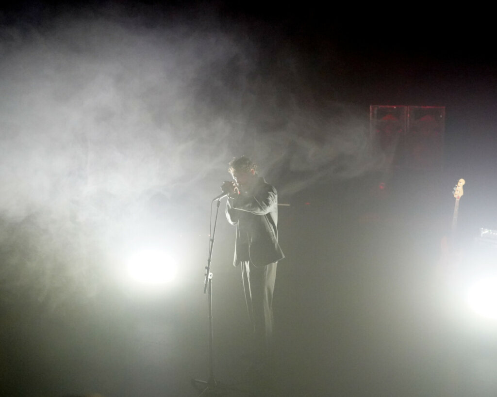
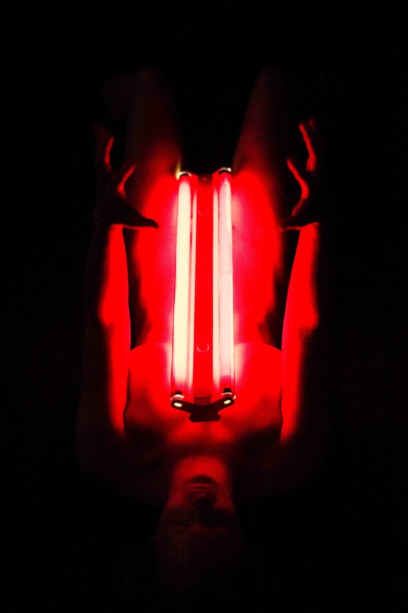

הזירה
מקום

״הדרך לעין חרוד״, צבי סהר
הזירה (נוסדה בשם הזירה הבין־תחומית) היא מוסד תרבות בתחום תיאטרון הפרינג' ובית הפקה ליצירה מקורית בתחומי הפרפורמנס והתיאטרון העכשווי. היא נוסדה ב־1999 מהתפצלותו של תיאטרון "הבמה" האוונגרדי למספר מוסדות, והם הזירה, תיאטרון הקרון ובית הספר לתיאטרון חזותי. תיאטרון הבמה נוסד ב־1989 על ידי הדס עפרת ומריו קוטליאר. הזירה מוגדרת כתיאטרון רפרטוארי אך תחומי עיסוקה רחבים יותר, וכוללים מופעי תיאטרון, פרפורמנס, מחול, אמנות פלסטית, סאונד, מוזיקה אקספרימנטלית ומדיה. הזירה מציגה באופן קבוע כ־15 הפקות מקור המציגות לאורך עונה, המתחילה בסתיו ומסתיימת בסוף יולי.

הופעה של המוזיקאי Katamine
לאורך שנות פעילותה של הזירה זהות האדם העומד בראשה הכתיבה את החיבור ליוצרי תרבות ומוסדות אלטרנטיביים אחרים בעיר. המנהל הראשון, הדס עפרת, הוא איש פרפורמנס וייצג פתיחות ואקספרימנטליות רבה. לאחר מכן היו מנהלים אחרים שהיו יותר מתחום התיאטרון ותחתם הזירה התרכזה בהפקות נגישות יותר. בשנים האחרונות, מאז 2018, מנהל אותה עמית דרורי שהחזיר לזירה את העיסוק במוזיקה ובאמנות אוונגרדיות יותר. כיום הזירה משתפת פעולה עם אמנים ויוצרים מגוונים, לדוגמה האמנים של סטודיו שטראוס, ועולים מופעי מוזיקה ניסיונית. עם זאת מההתחלה הייתה תחושה שהזירה היא פלטרפורמה לעשות ניסויים. לדוגמה בשנת 2006 ערכו מופעים באולם הקטן של תיאטרון החאן ואחריהם מסיבה של פאקוטק, אז דבר חתרני ביחס לגוף שאמור להיות תיאטרון. הפנזין מסיבות ביטחוניות הודפס במכונת הצילום של הזירה. היה את "יום לא חוקי" – אירוע שהתקיים פעם בשנה במשך 5-6 שנים, שערכו בו מופעים ותקלוטים של אנשים שהיו קשורים לרוזה כמו הדאב פלאוורז שהופיעו על המרפסת של בית הספר לתיאטרון חזותי, וגבי להלה (גבי קריכלי). קבוצת סלה־מנקה העלתה את המופע "הרהוריה של מלכה בגלות" בזירה.

Untitled מאת מאי זרחי
בתחילה הזירה ובית הספר החזותי שכנו במבנה ברחוב יד חרוצים. אחר כך הזירה נדדה בין מספר מיקומים, ללא אולם קבוע, כשכיום משכנה הקבוע הוא בקולנוע ישן שהוסב למטרה זו ברחוב הפרסה. כיום היא כוללת אולם תיאטרון מרכזי, גלריות, סטודיו, בית מלאכה, מעבדת אלקטרוניקה, מתפרה, אולפן הקלטות, מחסנים, משרדים ו־fablab.
ברפטואר הזירה כיום מופעים כגון "הדרך לעין חרוד" של צבי סהר על פי עמוס קינן, "כושלירבאק" מאת נורית דרימר, "וילה רדיוז" מאת אמיר מאיר ו"נער המים והמים" מאת אריאל סרני בראון. מופעי מוזיקה כוללים את וואקלקונטקט, כשיוף (איציק גיל אביזוהר ואייל [ללי] ביטון) ואנסמבל דיראון עולם.